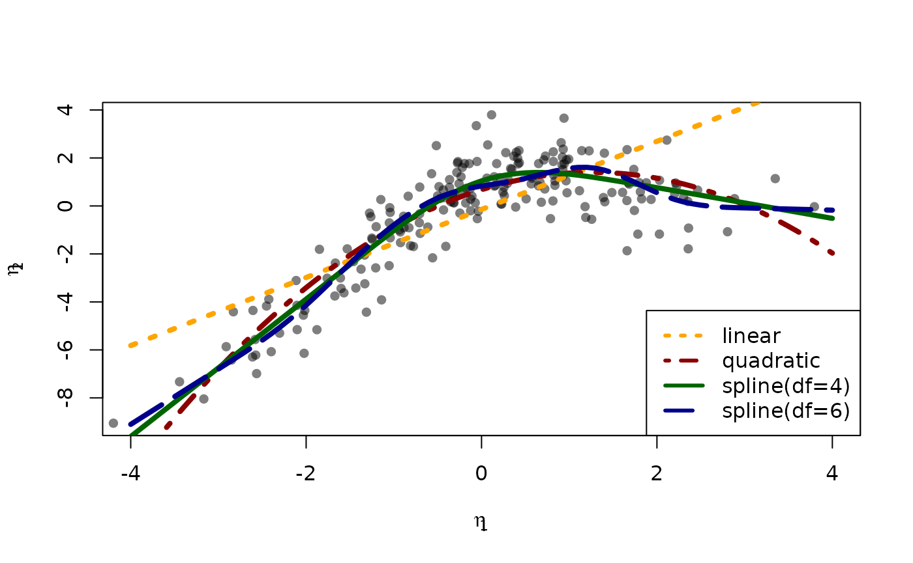

Non-linear latent variable models and error-in-variable models
Klaus Kähler Holst
2020-09-17
Source:vignettes/nonlinear.Rmd
nonlinear.RmdWe consider the measurement models given by
\[X_{j} = \eta_{1} + \epsilon_{j}^{x}, \quad j=1,2,3\] \[Y_{j} = \eta_{2} + \epsilon_{j}^{y}, \quad j=1,2,3\] and with a structural model given by \[\eta_{2} = f(\eta_{1}) + Z + \zeta_{2}\label{ex:eta2}\] \[\eta_{1} = Z + \zeta_{1}\label{ex:eta1}\] with iid measurement errors \(\epsilon_{j}^{x},\epsilon_{j}^{y},\zeta_{1},\zeta_{2}\sim\mathcal{N}(0,1), j=1,2,3.\) and standard normal distributed covariate \(Z\). To simulate from this model we use the following syntax:
f <- function(x) cos(1.25*x) + x - 0.25*x^2 m <- lvm(x1+x2+x3 ~ eta1, y1+y2+y3 ~ eta2, latent=~eta1+eta2) regression(m) <- eta1+eta2 ~ z functional(m, eta2~eta1) <- f d <- sim(m, n=200, seed=42) # Default is all parameters are 1
plot(m)
We refer to holstjoergensen_lava for details on the syntax for model specification.
Estimation
To estimate the parameters using the two-stage estimator described in lava_nlin, the first step is now to specify the measurement models
m1 <- lvm(x1+x2+x3 ~ eta1, eta1 ~ z, latent=~eta1) m2 <- lvm(y1+y2+y3 ~ eta2, eta2 ~ z, latent=~eta2)
Next, we specify a quadratic relationship between the two latent variables
nonlinear(m2, type="quadratic") <- eta2 ~ eta1
and the model can then be estimated using the two-stage estimator
e1 <- twostage(m1, m2, data=d) e1 #> Estimate Std. Error Z-value P-value #> Measurements: #> y2~eta2 0.97686 0.03451 28.30865 <1e-12 #> y3~eta2 1.04485 0.03485 29.98153 <1e-12 #> Regressions: #> eta2~z 0.88513 0.20778 4.25997 2.045e-05 #> eta2~eta1_1 1.14072 0.17410 6.55194 5.679e-11 #> eta2~eta1_2 -0.45055 0.07161 -6.29199 3.134e-10 #> Intercepts: #> y2 -0.12198 0.10915 -1.11749 0.2638 #> y3 -0.09879 0.10545 -0.93680 0.3489 #> eta2 0.67814 0.17363 3.90567 9.397e-05 #> Residual Variances: #> y1 1.30730 0.17743 7.36790 #> y2 1.11056 0.14478 7.67064 #> y3 0.80961 0.13203 6.13219 #> eta2 2.08483 0.28985 7.19274
We see a clear statistically significant effect of the second order term (eta2~eta1_2). For comparison we can also estimate the full MLE of the linear model:
e0 <- estimate(regression(m1%++%m2, eta2~eta1), d) estimate(e0,keep="^eta2~[a-z]",regex=TRUE) ## Extract coef. matching reg.ex. #> Estimate Std.Err 2.5% 97.5% P-value #> eta2~eta1 1.4140 0.2261 0.97083 1.857 4.014e-10 #> eta2~z 0.6374 0.2778 0.09291 1.182 2.177e-02
Next, we calculate predictions from the quadratic model using the estimated parameter coefficients \[ \mathbb{E}_{\widehat{\theta}_{2}}(\eta_{2} \mid \eta_{1}, Z=0), \]
newd <- expand.grid(eta1=seq(-4, 4, by=0.1), z=0) pred1 <- predict(e1, newdata=newd, x=TRUE) head(pred1) #> y1 y2 y3 eta2 #> [1,] -11.093569 -10.958869 -11.689950 -11.093569 #> [2,] -10.623561 -10.499736 -11.198861 -10.623561 #> [3,] -10.162565 -10.049406 -10.717187 -10.162565 #> [4,] -9.710579 -9.607878 -10.244928 -9.710579 #> [5,] -9.267605 -9.175153 -9.782084 -9.267605 #> [6,] -8.833641 -8.751230 -9.328656 -8.833641
To obtain a potential better fit we next proceed with a natural cubic spline
kn <- seq(-3,3,length.out=5) nonlinear(m2, type="spline", knots=kn) <- eta2 ~ eta1 e2 <- twostage(m1, m2, data=d) e2 #> Estimate Std. Error Z-value P-value #> Measurements: #> y2~eta2 0.97752 0.03455 28.29248 <1e-12 #> y3~eta2 1.04508 0.03488 29.96248 <1e-12 #> Regressions: #> eta2~z 0.86729 0.20273 4.27795 1.886e-05 #> eta2~eta1_1 2.86231 0.67270 4.25495 2.091e-05 #> eta2~eta1_2 0.00344 0.10097 0.03409 0.9728 #> eta2~eta1_3 -0.26270 0.29398 -0.89360 0.3715 #> eta2~eta1_4 0.50778 0.35191 1.44293 0.149 #> Intercepts: #> y2 -0.12185 0.10922 -1.11563 0.2646 #> y3 -0.09874 0.10545 -0.93638 0.3491 #> eta2 1.83814 1.66416 1.10454 0.2694 #> Residual Variances: #> y1 1.31286 0.17750 7.39647 #> y2 1.10412 0.14455 7.63850 #> y3 0.81124 0.13185 6.15286 #> eta2 1.99404 0.27004 7.38416
Confidence limits can be obtained via the Delta method using the estimate method:
p <- cbind(eta1=newd$eta1, estimate(e2,f=function(p) predict(e2,p=p,newdata=newd))$coefmat) head(p) #> eta1 Estimate Std.Err 2.5% 97.5% P-value #> p1 -4.0 -9.611119 1.2650975 -12.09066 -7.131573 3.027548e-14 #> p2 -3.9 -9.324887 1.2054916 -11.68761 -6.962167 1.031270e-14 #> p3 -3.8 -9.038656 1.1467339 -11.28621 -6.791099 3.219586e-15 #> p4 -3.7 -8.752425 1.0889618 -10.88675 -6.618099 9.176292e-16 #> p5 -3.6 -8.466193 1.0323409 -10.48954 -6.442842 2.384618e-16 #> p6 -3.5 -8.179962 0.9770712 -10.09499 -6.264938 5.668687e-17
The fitted function can be obtained with the following code:
plot(I(eta2-z) ~ eta1, data=d, col=Col("black",0.5), pch=16, xlab=expression(eta[1]), ylab=expression(eta[2]), xlim=c(-4,4)) lines(Estimate ~ eta1, data=as.data.frame(p), col="darkblue", lwd=5) confband(p[,1], lower=p[,4], upper=p[,5], polygon=TRUE, border=NA, col=Col("darkblue",0.2))

Cross-validation
A more formal comparison of the different models can be obtained by cross-validation. Here we specify linear, quadratic and cubic spline models with 4 and 9 degrees of freedom.
m2a <- nonlinear(m2, type="linear", eta2~eta1) m2b <- nonlinear(m2, type="quadratic", eta2~eta1) kn1 <- seq(-3,3,length.out=5) kn2 <- seq(-3,3,length.out=8) m2c <- nonlinear(m2, type="spline", knots=kn1, eta2~eta1) m2d <- nonlinear(m2, type="spline", knots=kn2, eta2~eta1)
To assess the model fit average RMSE is estimated with 5-fold cross-validation repeated two times
## Scale models in stage 2 to allow for a fair RMSE comparison d0 <- d for (i in endogenous(m2)) d0[,i] <- scale(d0[,i],center=TRUE,scale=TRUE) ## Repeated 5-fold cross-validation: ff <- lapply(list(linear=m2a,quadratic=m2b,spline4=m2c,spline6=m2d), function(m) function(data,...) twostage(m1,m,data=data,stderr=FALSE,control=list(start=coef(e0),contrain=TRUE))) fit.cv <- cv(ff,data=d,K=5,rep=2,mc.cores=4,seed=1) fit.cv #> RMSE #> linear 4.616861 #> quadratic 3.283140 #> spline4 3.067121 #> spline6 3.119904
Here the RMSE is in favour of the splines model with 4 degrees of freedom:
fit <- lapply(list(m2a,m2b,m2c,m2d), function(x) { e <- twostage(m1,x,data=d) pr <- cbind(eta1=newd$eta1,predict(e,newdata=newd$eta1,x=TRUE)) return(list(estimate=e,predict=as.data.frame(pr))) }) plot(I(eta2-z) ~ eta1, data=d, col=Col("black",0.5), pch=16, xlab=expression(eta[1]), ylab=expression(eta[2]), xlim=c(-4,4)) col <- c("orange","darkred","darkgreen","darkblue") lty <- c(3,4,1,5) for (i in seq_along(fit)) { with(fit[[i]]$pr, lines(eta2 ~ eta1, col=col[i], lwd=4, lty=lty[i])) } legend("bottomright", c("linear","quadratic","spline(df=4)","spline(df=6)"), col=col, lty=lty, lwd=3)

For convenience, the function twostageCV can be used to do the cross-validation (also for choosing the mixture distribution via the ``nmix`` argument, see the section below). For example,
selmod <- twostageCV(m1, m2, data=d, df=2:3, nmix=1:2, nfolds=2, rep=1, mc.cores=parallel::detectCores())
applies cross-validation (here just 2 folds for simplicity) to select the best splines with degrees of freedom varying from from 1-3 (the linear model is automatically included)
selmod #> ______________________________________________________________________ #> Selected mixture model: 2 components #> AIC1 #> 1 1961.839 #> 2 1958.803 #> ______________________________________________________________________ #> Selected spline model degrees of freedom: 2 #> Knots: -3.958 0.02149 4.001 #> #> RMSE(nfolds=2, rep=1) #> df:1 4.544070 #> df:2 3.736255 #> df:3 3.959411 #> ______________________________________________________________________ #> #> Estimate Std. Error Z-value P-value #> Measurements: #> y1~eta2 1.00000 #> y2~eta2 0.97794 0.03463 28.24077 <1e-12 #> y3~eta2 1.04520 0.03473 30.09595 <1e-12 #> Regressions: #> eta2~z 1.02819 0.22297 4.61135 4.001e-06 #> eta2~eta1_1 3.41774 0.36899 9.26229 <1e-12 #> eta2~eta1_2 -0.05122 0.00706 -7.25314 <1e-12 #> Intercepts: #> y1 0.00000 #> y2 -0.12176 0.10921 -1.11495 0.2649 #> y3 -0.09872 0.10547 -0.93600 0.3493 #> eta2 3.93713 0.54020 7.28826 <1e-12 #> Residual Variances: #> y1 1.31625 0.17654 7.45594 #> y2 1.09975 0.14507 7.58079 #> y3 0.81270 0.13258 6.12987 #> eta2 2.01822 0.28971 6.96634
Specification of general functional forms
Next, we show how to specify a general functional relation of multiple different latent or exogenous variables. This is achieved via the predict.fun argument. To illustrate this we include interactions between the latent variable \(\eta_{1}\) and a dichotomized version of the covariate \(z\)
d$g <- (d$z<0)*1 ## Group variable mm1 <- regression(m1, ~g) # Add grouping variable as exogenous variable (effect specified via 'predict.fun') mm2 <- regression(m2, eta2~ u1+u2+u1:g+u2:g+z) pred <- function(mu,var,data,...) { cbind("u1"=mu[,1],"u2"=mu[,1]^2+var[1], "u1:g"=mu[,1]*data[,"g"],"u2:g"=(mu[,1]^2+var[1])*data[,"g"]) } ee1 <- twostage(mm1, model2=mm2, data=d, predict.fun=pred) estimate(ee1,keep="eta2~u",regex=TRUE) #> Estimate Std.Err 2.5% 97.5% P-value #> eta2~u1 0.9891 0.3020 0.3971 1.5810 0.001057 #> eta2~u2 -0.3962 0.1443 -0.6791 -0.1133 0.006047 #> eta2~u1:g 0.4487 0.4620 -0.4568 1.3543 0.331409 #> eta2~u2:g 0.0441 0.2166 -0.3804 0.4686 0.838667
A formal test show no statistically significant effect of this interaction
summary(estimate(ee1,keep="(:g)", regex=TRUE)) #> Call: estimate.default(x = ee1, keep = "(:g)", regex = TRUE) #> __________________________________________________ #> Estimate Std.Err 2.5% 97.5% P-value #> eta2~u1:g 0.4487 0.4620 -0.4568 1.3543 0.3314 #> eta2~u2:g 0.0441 0.2166 -0.3804 0.4686 0.8387 #> #> Null Hypothesis: #> [eta2~u1:g] = 0 #> [eta2~u2:g] = 0 #> #> chisq = 0.9441, df = 2, p-value = 0.6237
Mixture models
Lastly, we demonstrate how the distributional assumptions of stage 1 model can be relaxed by letting the conditional distribution of the latent variable given covariates follow a Gaussian mixture distribution. The following code explictly defines the parameter constraints of the model by setting the intercept of the first indicator variable, \(x_{1}\), to zero and the factor loading parameter of the same variable to one.
m1 <- baptize(m1) ## Label all parameters intercept(m1, ~x1+eta1) <- list(0,NA) ## Set intercept of x1 to zero. Remove the label of eta1 regression(m1,x1~eta1) <- 1 ## Factor loading fixed to 1
The mixture model may then be estimated using the mixture method, where the Parameter names shared across the different mixture components given in the list will be constrained to be identical in the mixture model. Thus, only the intercept of \(\eta_{1}\) is allowed to vary between the mixtures.
To decrease the risk of using a local maximizer of the likelihood we can rerun the estimation with different random starting values
em0 <- NULL ll <- c() for (i in 1:5) { set.seed(i) em <- mixture(m1, k=2, data=d, control=list(trace=0)) ll <- c(ll,logLik(em)) if (is.null(em0) || logLik(em0)<tail(ll,1)) em0 <- em }
summary(em0) #> Cluster 1 (n=162, Prior=0.776): #> -------------------------------------------------- #> Estimate Std. Error Z value Pr(>|z|) #> Measurements: #> x1~eta1 1.00000 #> x2~eta1 0.99581 0.07940 12.54100 <1e-12 #> x3~eta1 1.06344 0.08436 12.60541 <1e-12 #> Regressions: #> eta1~z 1.06674 0.08527 12.50985 <1e-12 #> Intercepts: #> x1 0.00000 #> x2 0.03845 0.09890 0.38883 0.6974 #> x3 -0.02549 0.10333 -0.24667 0.8052 #> eta1 0.20925 0.13162 1.58979 0.1119 #> Residual Variances: #> x1 0.98540 0.13316 7.40023 #> x2 0.97180 0.13156 7.38694 #> x3 1.01316 0.14294 7.08813 #> eta1 0.29047 0.11129 2.61002 #> #> Cluster 2 (n=38, Prior=0.224): #> -------------------------------------------------- #> Estimate Std. Error Z value Pr(>|z|) #> Measurements: #> x1~eta1 1.00000 #> x2~eta1 0.99581 0.07940 12.54100 <1e-12 #> x3~eta1 1.06344 0.08436 12.60541 <1e-12 #> Regressions: #> eta1~z 1.06674 0.08527 12.50985 <1e-12 #> Intercepts: #> x1 0.00000 #> x2 0.03845 0.09890 0.38883 0.6974 #> x3 -0.02549 0.10333 -0.24667 0.8052 #> eta1 -1.44290 0.25867 -5.57806 2.432e-08 #> Residual Variances: #> x1 0.98540 0.13316 7.40023 #> x2 0.97180 0.13156 7.38694 #> x3 1.01316 0.14294 7.08813 #> eta1 0.29047 0.11129 2.61002 #> -------------------------------------------------- #> AIC= 1958.803 #> ||score||^2= 3.815657e-06
Measured by AIC there is a slight improvement in the model fit using the mixture model
The spline model may then be estimated as before with the two-stage method
em2 <- twostage(em0,m2,data=d) em2 #> Estimate Std. Error Z-value P-value #> Measurements: #> y2~eta2 0.97823 0.03469 28.19904 <1e-12 #> y3~eta2 1.04530 0.03484 30.00721 <1e-12 #> Regressions: #> eta2~z 1.02885 0.22330 4.60755 4.074e-06 #> eta2~eta1_1 2.80412 0.65493 4.28154 1.856e-05 #> eta2~eta1_2 -0.02249 0.09996 -0.22497 0.822 #> eta2~eta1_3 -0.17333 0.28933 -0.59907 0.5491 #> eta2~eta1_4 0.38673 0.33983 1.13802 0.2551 #> Intercepts: #> y2 -0.12171 0.10925 -1.11407 0.2653 #> y3 -0.09870 0.10546 -0.93592 0.3493 #> eta2 2.12369 1.66552 1.27510 0.2023 #> Residual Variances: #> y1 1.31872 0.17657 7.46861 #> y2 1.09690 0.14503 7.56340 #> y3 0.81345 0.13259 6.13509 #> eta2 1.99590 0.28454 7.01454
In this example the results are very similar to the Gaussian model:
plot(I(eta2-z) ~ eta1, data=d, col=Col("black",0.5), pch=16, xlab=expression(eta[1]), ylab=expression(eta[2])) lines(Estimate ~ eta1, data=as.data.frame(p), col="darkblue", lwd=5) confband(p[,1], lower=p[,4], upper=p[,5], polygon=TRUE, border=NA, col=Col("darkblue",0.2)) pm <- cbind(eta1=newd$eta1, estimate(em2, f=function(p) predict(e2,p=p,newdata=newd))$coefmat) lines(Estimate ~ eta1, data=as.data.frame(pm), col="darkred", lwd=5) confband(pm[,1], lower=pm[,4], upper=pm[,5], polygon=TRUE, border=NA, col=Col("darkred",0.2)) legend("bottomright", c("Gaussian","Mixture"), col=c("darkblue","darkred"), lwd=2, bty="n")

Bibliography
[holstjoergensen_lava] Holst & Budtz-J, Linear latent variable models: the lava-package, Computational Statistics, 28(4), 1385-1452 (2013). doi. ↩
[lava_nlin] Klaus Kähler Holst & Esben Budtz-Jørgensen, A two-stage estimation procedure for non-linear structural equation models, Biostatistics, (in press), (2020). doi. ↩